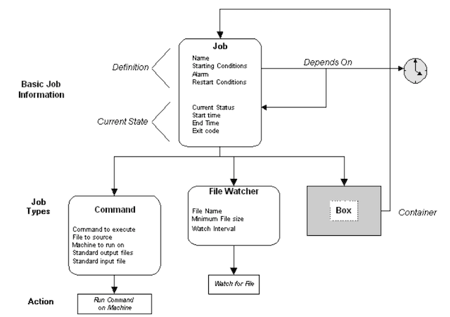

2 Autosys JIL
1 Autosys JIL, Essential, General & Options Attributes
Objectives
- JIL
- Essential Attributes
- General Attributes
- Optional Attributes
What is an Autosys Job?
A single action performed on a validated machine which can be a command or executable script or NT batch file.
Autosys jobs can be defined using GUI or JIL which contains a set of qualifying attributes, conditions specifying when and where a job should be run.
Two methods to define Autosys Jobs：
- Using Autosys GUI.
- Using Job Information Language(JIL).
JIL (Job information language)
JIL is a language that has its own syntax to describe when, and where and how a job should be run.
Example:
/*************MY_JOB_1**********/
insert_job: MY_JOB_1 job_type: c
command: /full-path-of-/clean.sh <dirname>
machine: machabcWind
owner: sugnan
start_times: 00:10
permission: wx,mx,we,me
description: "Job to clean the <dirname>"
job_terminator: 1
alarm_if_fail: 0
-
Essential attributes
insert_job(job name)job_type- owner
- Machine
-
General attributes
- Description
max_run_alarmmin_run_alarmalarm_if_failstd_out_filestd_err_filewatch_file:watch_intervalwatch_file_min_size- command
box_namejob_terminatorbox_terminator
-
Optional attributes
date_conditionsStart_times/start_mindays_of_weekConditionrun_calendarexclude_calendarterm_run_timen_retrysrun_windowjob_load- Priority
2 Jobs Attributes in details
- Essential Attributes
- General Attributes
Essential Jobs Attributes
-
insert_job: The job name is used to identify the job, and must be unqiue. It can be from 1 to 30 alphanumetic characters. Command, file watcher, and box jobs cannot use the same nameinsert_job: PC_JOB1
-
job_type: The job type specifies the type of job: command (c), file watcher(f) or box(b).job_type: c or f or b
-
owner: The job owner specifies whose user ID the command will be run under on the client Machine.
owner: root
-
machine: This attribute specifies the client machine on which the command should be run.
Machine: server1
General Job attributes
command : command is any single unix command, Shell Script or a NT batch file
Example : command : ls -1
description: This attribute provides a comment field, used for documentation purposes only.
Example: description: "Run every day to zip ARCH files in serverl"
-
max_run_alarm: A maximum runtime can be specified for a job. If a maximum runtime is specified, the job should not take longer than the specified time to finish. -
min_run_alarm: A minimum runtime (in minutes) can be specified for it job; the job should not end in less than the specified time. -
alarm_if_fail: Send ALARM if this Job Fails std_out_file: The standard output file can be redirected to any file on the client machine to which the job owner has write permissionstd_err_file: The standard error file can be redirected to any file on the client machine to which the job owner has write permission.watch_file: This attribute specifies the name of the file to watch forwatch_interval: The watch interval specifies (in seconds) how often the File Watcher should check the current file size to ascertain whether data is still being written to the file. The default is every 60 seconds.watch_file_min_size: The watch file minimum size determines when enough data has been written to the file to consider it "complete." This attribute is specified in bytes.job_terminator: This attribute specifies whether or not the job should be terminated if the box it is in fails or terminates.
Optional attributes
date_conditions: The start date/time dependencies attribute is a toggle, which specifies whether or not there is date, time, or both, conditions required for starting the job If the attribute is set to "no", the remainder of the related date/ time attributes, will be ignoreddays_of_week:The days of the week attribute specifies the days on which the job should be run. You can specify one or more days, or "all" for every daystart_times: This attribute specifies one or more specific times of day when the job should be Started
Example:
insert_job: job1 job_type: c
machine: server1
owner: oracle
permission: mx,me
date_conditions: 1
days_of_week: all
start_times: "5:00"
start_mins: One or more specific times per hour when the of should be started can be specified. Each time is specified in minutes past the hour
Example:
insert_job: job2 job_type: C
Command: rm -rf *txt
machine: server1
owner: oracle
permission: mx,me
date_conditions: 1
days_of_week: all
start_mines: 0,15,30,45
description: "Remove .txt files"
- condition: This attribute specifies the Starting Condition required for a job. Any number of job dependencies can be specified which include successtul completion of a job, failure of a job, a job's exit code, and the value of a global variable. Various combinations of conditions may also he specified
n_retrys: This attribute specifies how many times, it any, the job should be restarted after exiting with a FAILURE status.- The default is 0, which means the job will not be automatically restarted after an application failure. This attribute applies to application failures not to system or network failures
term_run_time: A maximum rtmtime (in minutes) can be specified for a job; the job should not take longer than the specified time to finish. This feature allows the job to be automatically terminated it it runs longer than the allotted thee.- run_window`: This attribute specifies a time range ( or time window) during which a job can be started.
run_calendar: The days on which a job should be run can be specified by way of a custom canlendar, rather than through a list of days of the week.exclude_calendar: The days on which a job should not lie run can be specified by way of a custom calendar.
2 JIL Subcommands
JIL subcommands lets you define and modify asset definitions. You specify JIL subcommands using the jil command.
The following JIL subcommands define and modify jobs and boxes:
delete_box
Deletes an existing box job and all the jobs in that box from the database.
delete_job
Deletes a job from the database. If the specified job is a box job, the box job is deleted and the jobs in the box become stand-alone jobs.
insert_job
Adds a new job definition to the database.
override_job
Defines a one-time override for an existing job definition. This override affects the job for the next run only.
update_job
Updates an existing job definition in the database. The following JIL subcommands define and modify machines:
delete_machine
Deletes an existing real or virtual machine definition from the database.
insert_machine
Insert a new real or virtual machine definition in the database. A machine must be defined before it can be used in a job definition.
update_machine
Updates an existing machine in the database.
The following JIL subcommands define and modify monitor or report definitions:
delete_monbro
Deletes the specified monitor or report definition from the database.
insert_monbro
Adds a new monitor or report definition to the database.
update_monbro
Updates an existing monitor or report definition in the database.
The following JIL subcommands define and modify job types:
delete_job_type
Verifies that no jobs are currently defined with the specified job type, then deletes the specified job type definition from the database.
insert_job_type
Adds a new user-defined job type definition to the database. This is the only way to create a user-defined job type.
update_job_type
Updates an existing user-defined job type definition in the database. You can use update_job_type to change the values of the command and description attributes.
The following JIL subcommands define and modify blobs and globs:
insert_blob
Adds a new blob definition associated with an existing job.
-
insert_globAdds a new glob definition referenced by a given name. -
delete_blobDecouples a blob definition from an existing job and deletes the blob from the database. -
delete_globDeletes the specified glob definition from the database. The following JIL subcommands define and modify external instances: -
delete_xinst
Deletes the specified external instance definition from the database.
insert_xinst
Adds a new external instance definition to the database.
update_xinst
Updates an existing external instance definition in the database.
The following JIL subcommands define and modify resources:
delete_resource
Deletes a virtual resource from the database.
insert_resource
Adds a new virtual resource definition to the database. JIL Subcommands
Example JIL Script
# Example of a Machine insert_machine: lowgate type: a
# Example of Jobs insert_job: Nightly_Download job_type: box date_conditions: yes days_of_week: all start_times: "02:00" insert_job: Watch_4_file job_type: ft
box_name: Nightly_Download
watch_file: /DOWNLOAD/MAINFRAME/SALES.RAW watch_file_type: generate
machine: lowgate
insert_job: filter_data
job_type: cmd
box_name: Nightly_Download
condition: success(Watch_4_file)
command: filter_mainframe_info
machine: lowgate
std_in_file: /DOWNLOAD/MAINFRAME/SALES.RAW
insert_job: parse_data
job_type: cmd
box_name: Nightly_Download c
ondition: success(filter_data)
machine: lowgate
command: isql -U mutt -P jeff
std_in_file: /DOWNLOAD/MAINFRAME/SALES.SQL std_out_file: /LOG/parse_data.out
std_err_file: /LOG/LOG/parse_data.err
3 JIL Job Type Definitions
When you create a job definition, you must specify the job type.
Job types define the type of work to be scheduled.
For example,
- You can create a CMD job to run a Windows command,
- An FTP job to download a file from a server,
- An SAPEM job to monitor for the triggering of an SAP event.
- You can also define box jobs, which are containers that hold other jobs or box jobs. You can define your own job type.
Each job type has required and optional attributes that define the job.
The job types have many common attributes and CA Workload Automation AE treats them all similarly.
The primary differences between them are the actions taken when the jobs run.
The structure of a job depends on the job type. For example, the following illustration shows the structure of a Command, File Watcher, and Box job:

Insert a Job Definition
Sometimes the job that you need to run does not have a definition stored in the database
Follow these steps:
-
Do one of the following:
- Issue JIL in interactive mode.
- Open a JIL script in a text editor.
-
Specify the following definition:
insert_job: job_name
machine: machine_name
job_type: type
required_attribute: value
[attribute: value...]
job_nameDefines a unique name for the job.machine_nameSpecifies the name of the machine on which the job runs.- type Specifies the type of job you are defining.
required_attribute: value(Optional) Specifies that name of an optional JIL attribute and the corresponding value. The optional attributes that you can specify in a job definition depend on the type of job that you are defining.- value Defines the value of the corresponding attribute.
Do one of the following:
- Enter exit if you are using interactive mode.
- Redirect the script to the jil command if you are using a script.
The data is loaded into the database and the job is defined.
Example: Define a Command Job
This example runs the /bin/touch command on the file named /tmp/test_run.out. The job runs on the UNIX client computer named unixagent.
insert_job: test_run
job_type: CMD /* This attribute is optional for Command jobs. CMD is the default. */ machine: unixagent
command: /bin/touch /tmp/test_run.out
Update a Job Definition
Sometimes you must modify an existing job definition. For example, you must edit the definition of a reporting job to comply with new reporting requirements. To modify the definition, use the update_job subcommand.
update_job: job_name
attribute: value
[attribute: value...]
Defining Jobs to Run on a Cluster
Defining jobs to run on a cluster helps improve workload performance. We recommend this method for the following types of jobs:
- Jobs that use shared resources
- Jobs with high CPU consumption
- Command jobs that execute client utilities
Delete a Job
When you no longer need a job definition, you can delete it from the database.
Specify the following subcommand:
delete_job: job_name
job_name:
This example deletes the test_run job.
delete_job: test_run
Running a Job After Using JIL
After you submit a job definition to the database, it runs according to the starting parameters specified in its JIL script.
Example: Run a Job with the sendevent Command
This example assumes that a job named test_install has no starting parameters specified in its JIL script. The only way to start it is to issue the following command:
sendevent -E STARTJOB -J test_install
This command tells the scheduler to start the job named test_install.